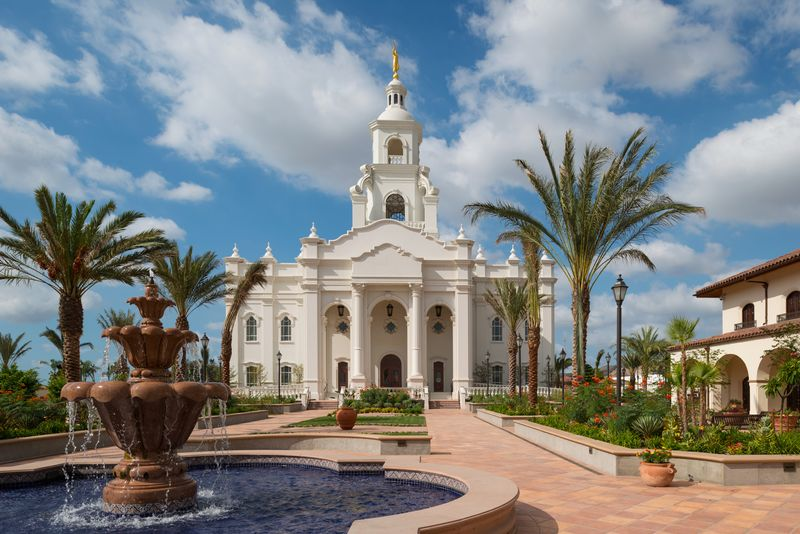
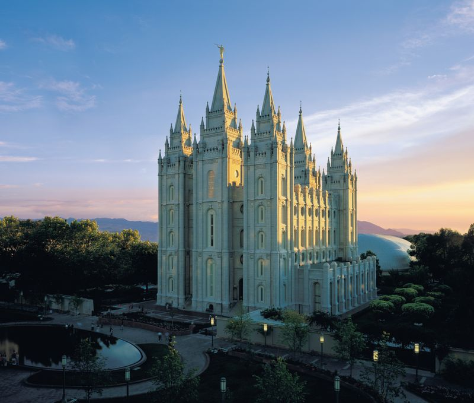
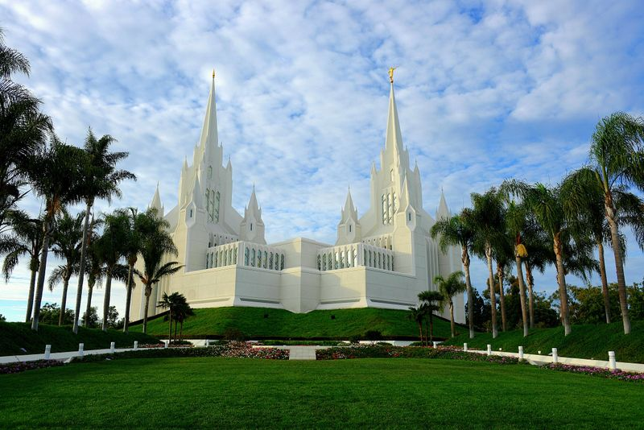
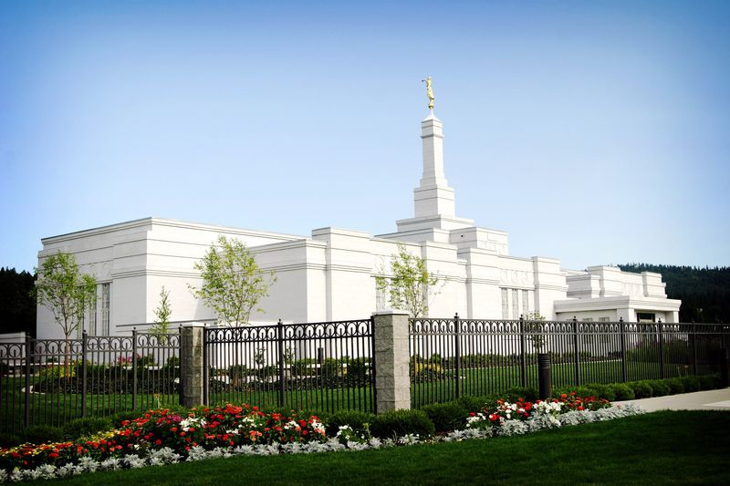
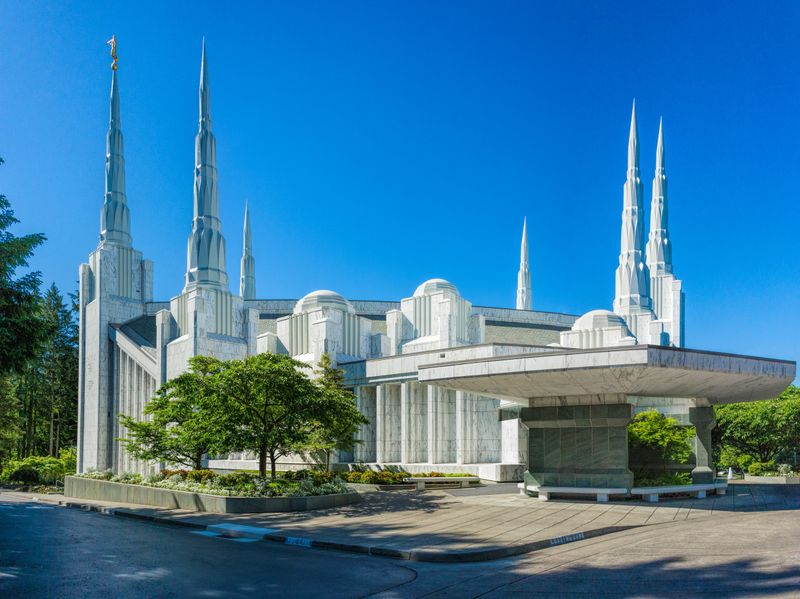

🌟 Top 9 Most Beautiful LDS Temples

Tijuana Mexico Temple — Mexico 🇲🇽
A stunning temple with Spanish Colonial Revival architecture, beautiful gardens, and a peaceful atmosphere.
 Laie Hawaii Temple — Hawaii, USA 🌴
Laie Hawaii Temple — Hawaii, USA 🌴
Framed by palm trees and tropical surroundings, this iconic temple blends beautifully with the Hawaiian landscape.

Salt Lake Temple — Utah, USA 🏙️
Perhaps the most recognized LDS temple in the world, renowned for its neo-Gothic architecture and historic significance.

San Diego California Temple — California, USA ☀️
Distinctive with 10 spires and a bright white exterior, this temple is one of the most architecturally unique and
dramatic LDS temples.

Washington D.C. Temple — Maryland, USA 🇺🇸
An elegant and grand temple often featured in lists of the most beautiful temples, noted for its tall spires and
sweeping landscaping.

Portland Oregon Temple — Oregon, USA 🌲
Known for its graceful lines and wooded setting, this temple offers a peaceful and picturesque view year-round.
 Paris France Temple — France 🇫🇷
Paris France Temple — France 🇫🇷
Praised for its European elegance, this temple stands out with sophisticated design elements that reflect its cultural
surroundings.
Helsinki Finland Temple — Finland 🇫🇮
Set on a wooded hilltop with classic granite and refined lines, this temple combines natural beauty with architectural
calm.
 Papeete Tahiti Temple — Tahiti 🇵🇫
Papeete Tahiti Temple — Tahiti 🇵🇫
A tropical temple with a blend of French and Polynesian design elements, set amid lush island scenery.